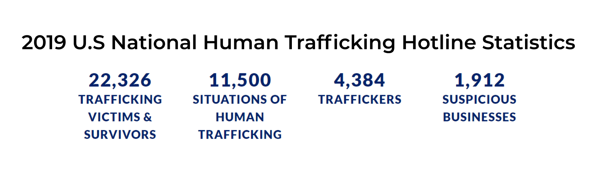
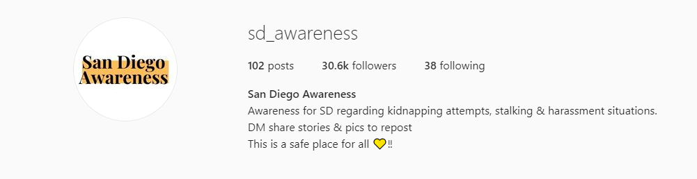
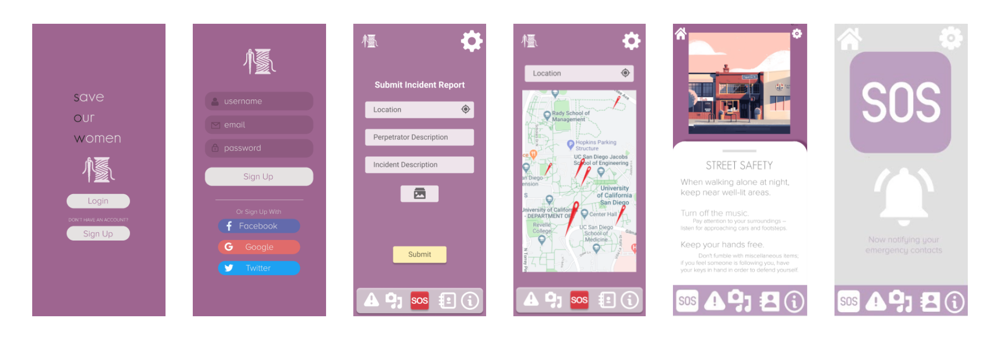
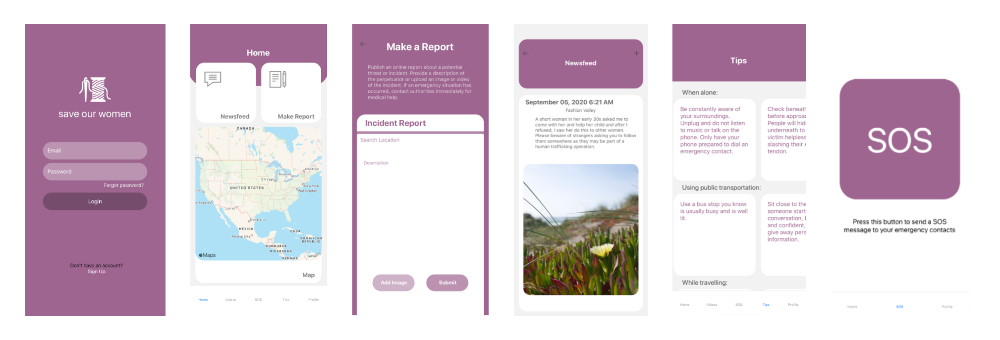

save our women
Whether it be taking a walk, jogging, or going out to buy groceries,
women often find themselves in situations where they have to be extra cautious of their
surroundings.
Background
With the rise of sex trafficking and and kidnappings around the world, women
have resorted
to purchasing self protection items such as pepper spray, tasers, and alarms as means to keep
themselves safe
in fear of being victims to these horrendous acts. Although other apps to fight this include
features
like emergency contacts, police calls, there’s no one app that includes everything that a woman
needs to stay safe,
including awareness spreading and a section for tips.
While walking my dog in broad daylight, I find myself extra cautious with my surroundings, looking behind me every now and then to make sure no one’s following me. I even get startled by a car pulling over near me. Although I have pepper spray, I find the need for more items to keep myself safe. On social media, several other women have voiced their experiences surrounding this topic, thus leading me to want something that encompassed everything that pertained to women safety and that could connect us and our contacts.
While walking my dog in broad daylight, I find myself extra cautious with my surroundings, looking behind me every now and then to make sure no one’s following me. I even get startled by a car pulling over near me. Although I have pepper spray, I find the need for more items to keep myself safe. On social media, several other women have voiced their experiences surrounding this topic, thus leading me to want something that encompassed everything that pertained to women safety and that could connect us and our contacts.
Solution
Save Our Women - a Women's Safety App (iOS)
Inspired by recent events and increased media presence on women safety, this
iOS app aims to
promote the safety of women through awareness and action.
Features:
Features:
- Emergency SOS Messaging and Location Tracking to Emergency Contacts - with the tap of a button, send Emergency SOS messages to your Emergency Contacts with your location
- Creation of Incident Reports - create reports by pinpointing the location and description of an incident and share to others on the platform
- Live Map of Incidents - integrated maps with pinpoint locations and incident hotspots/clusters
- Scenario Based Audios and Tips - spread awareness and tips to ensure other women are well informed of recent issues and how they can keep themselves safe
User Research/Needfinding

These statistics derive from the 2019 data report for the U.S National Human
Trafficking Hotline. As we understand that this
does not encompass the entirety of trafficking cases, the large numbers allowed us to judge that
this was an issue that needed to be addressed.

Further, through investigating local social media pages like @sdawareness on Instgram, we found that there was a lot of attention on the topic but stayed central to just self reflected stories. This made us want to build an app that encompassed various topics pertaining to spreading awareness, tips, and safety.
We also investigated other apps related to safety and found Indian SOS Women Safety and Sister, both of which had similar features. We used these two apps to draw inspiration from but also refine and bring uniqueness to our app.
UI Design
We used Figma to design our app's UI. Starting with the Mockup, we gauged
what elements we wanted on our screens and refined that to our Final.
Mockup

Final

Programming
For our front end, we used React Native and Google Places and Maps API. We
connected the front and back end through Axios.
I focused more on the back end, leveraging Python Flask as our back end server and Google Firebase as our database and authentication. I further implemented the Emergency SOS contact messaging through Twilio API and built Docker containers to allow front end to run the back end.
I focused more on the back end, leveraging Python Flask as our back end server and Google Firebase as our database and authentication. I further implemented the Emergency SOS contact messaging through Twilio API and built Docker containers to allow front end to run the back end.
Reflection
Throughout this entire process, I learned to build an MVP given a 10 week
timeline. It was also my first time engaging in a project,
so I learned many new technologies such as Flask, Firebase, and REST APIs. Since this was conducted
entirely online due to COVID-19, I found it challenging to
communicate with my teammates, however we were able to tackle this through weekly standups and work
sessions. Possible improvements this project could have
expanded on given more time include more extensive user testing to find bugs in our app.
Sources